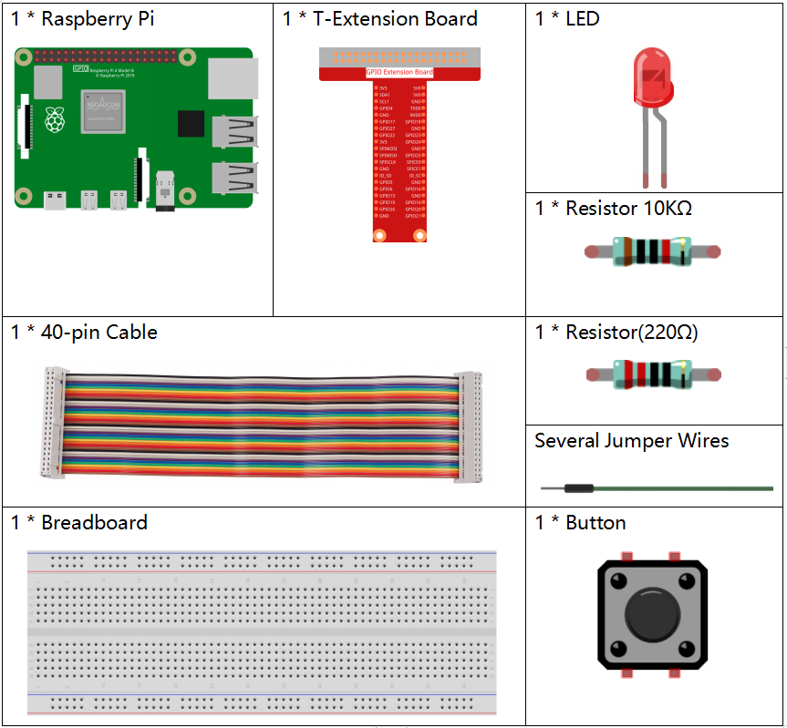

Nota
Ciao, benvenuto nella Community di SunFounder per appassionati di Raspberry Pi, Arduino ed ESP32 su Facebook! Approfondisci Raspberry Pi, Arduino ed ESP32 insieme ad altri appassionati.
Perché unirti?
Supporto Esperto: Risolvi problemi post-vendita e sfide tecniche con l’aiuto della nostra community e del nostro team.
Apprendimento e Condivisione: Scambia consigli e tutorial per migliorare le tue competenze.
Anteprime Esclusive: Ottieni accesso anticipato agli annunci di nuovi prodotti e alle anteprime.
Sconti Speciali: Approfitta di sconti esclusivi sui nostri prodotti più recenti.
Promozioni Festive e Giveaway: Partecipa a concorsi e promozioni speciali durante le festività.
üëâ Pronto a esplorare e creare con noi? Clicca [Qui] e unisciti oggi stesso!
2.1.1 Pulsante
Introduzione
In questa lezione impareremo come accendere o spegnere un LED utilizzando un pulsante.
Componenti
Principio
Pulsante
Il pulsante è un componente comune per il controllo di dispositivi elettronici, usato principalmente come interruttore per collegare o interrompere circuiti. I pulsanti possono avere dimensioni e forme varie; in questo caso utilizziamo un mini-pulsante da 6mm, come mostrato nelle immagini seguenti.
I due pin a sinistra sono collegati tra loro, così come quelli a destra, come illustrato di seguito:

Il simbolo mostrato qui sotto rappresenta comunemente un pulsante nei circuiti.

Quando il pulsante viene premuto, i 4 pin vengono connessi, chiudendo il circuito.
Schema Elettrico
Utilizza un pulsante normalmente aperto come ingresso per Raspberry Pi; la connessione è mostrata nel diagramma elettrico sottostante. Quando il pulsante viene premuto, il GPIO18 passa a livello basso (0V). Possiamo rilevare lo stato di GPIO18 tramite programmazione: se GPIO18 passa a livello basso, significa che il pulsante è stato premuto. A questo punto il LED si accenderà.
Nota
Il pin più lungo del LED è l’anodo, mentre quello più corto è il catodo.


Procedure Sperimentali
Passo 1: Costruisci il circuito.

Per Utenti C
Passo 2: Apri il file del codice.
cd ~/davinci-kit-for-raspberry-pi/c/2.1.1/
Nota
Cambia directory al percorso del codice di questo esperimento tramite cd.
Passo 3: Compila il codice.
gcc 2.1.1_Button.c -lwiringPi
Passo 4: Esegui il file compilato.
sudo ./a.out
Dopo l’esecuzione del codice, premi il pulsante: il LED si accenderà; altrimenti, resterà spento.
Nota
Se il programma non funziona o compare il messaggio di errore: "wiringPi.h: No such file or directory», fai riferimento a Il codice C non funziona?.
Codice
#include <wiringPi.h>
#include <stdio.h>
#define LedPin 0
#define ButtonPin 1
int main(void){
// Se l’inizializzazione di wiringPi fallisce, stampa un messaggio a schermo
if(wiringPiSetup() == -1){
printf("setup wiringPi failed !");
return 1;
}
pinMode(LedPin, OUTPUT);
pinMode(ButtonPin, INPUT);
digitalWrite(LedPin, HIGH);
while(1){
// Indica che il pulsante è stato premuto
if(digitalRead(ButtonPin) == 0){
// Accendi LED
digitalWrite(LedPin, LOW);
// printf("...LED acceso\n");
}
else{
// Spegni LED
digitalWrite(LedPin, HIGH);
// printf("LED spento...\n");
}
}
return 0;
}
Spiegazione del Codice
#define LedPin 0
Il pin GPIO17 sulla T_Extension Board corrisponde al GPIO0 in wiringPi.
#define ButtonPin 1
ButtonPin è collegato al GPIO1.
pinMode(LedPin, OUTPUT);
Imposta LedPin come uscita per poter assegnare un valore.
pinMode(ButtonPin, INPUT);
Imposta ButtonPin come ingresso per leggere il valore di ButtonPin.
while(1){
// Indica che il pulsante è stato premuto
if(digitalRead(ButtonPin) == 0){
// Accendi LED
digitalWrite(LedPin, LOW);
// printf("...LED acceso\n");
}
else{
// Spegni LED
digitalWrite(LedPin, HIGH);
// printf("LED spento...\n");
}
}
if (digitalRead (ButtonPin) == 0): verifica se il pulsante è stato premuto. Esegui digitalWrite(LedPin, LOW) quando il pulsante è premuto per accendere il LED.
Per Utenti Python
Passo 2: Apri il file di codice.
cd ~/davinci-kit-for-raspberry-pi/python
Passo 3: Esegui il codice.
sudo python3 2.1.1_Button.py
Ora, premi il pulsante, e il LED si accenderà; premi nuovamente il pulsante, e il LED si spegnerà. Allo stesso tempo, lo stato del LED verrà stampato sullo schermo.
Codice
Nota
Puoi Modificare/Reimpostare/Copiare/Eseguire/Interrompere il codice sottostante. Ma prima di farlo, devi andare nel percorso del codice sorgente come davinci-kit-for-raspberry-pi/python.
import RPi.GPIO as GPIO
import time
LedPin = 17 # Imposta GPIO17 come pin del LED
BtnPin = 18 # Imposta GPIO18 come pin del pulsante
Led_status = True # Imposta lo stato del LED su True (SPENTO)
# Definisci una funzione di setup per alcune configurazioni iniziali
def setup():
# Imposta la modalità GPIO su numerazione BCM
GPIO.setmode(GPIO.BCM)
GPIO.setup(LedPin, GPIO.OUT, initial=GPIO.HIGH) # Imposta il LedPin come uscita e il livello iniziale su alto (3.3V)
GPIO.setup(BtnPin, GPIO.IN) # Imposta BtnPin come ingresso.
# Definisci una funzione di callback per il pulsante
def swLed(ev=None):
global Led_status
# Cambia lo stato del LED (acceso-->spento; spento-->acceso)
Led_status = not Led_status
GPIO.output(LedPin, Led_status)
if Led_status:
print ('LED OFF...')
else:
print ('...LED ON')
# Definisci una funzione principale per il processo principale
def main():
# Imposta una rilevazione di caduta su BtnPin,
# e collega la funzione di callback a swLed
GPIO.add_event_detect(BtnPin, GPIO.FALLING, callback=swLed)
while True:
# Non fare nulla
time.sleep(1)
# Definisci una funzione destroy per pulire tutto al termine
# dello script
def destroy():
# Spegni il LED
GPIO.output(LedPin, GPIO.HIGH)
# Rilascia le risorse
GPIO.cleanup()
# Se esegui questo script direttamente, fai:
if __name__ == '__main__':
setup()
try:
main()
# Quando viene premuto 'Ctrl+C', il programma
# eseguirà destroy().
except KeyboardInterrupt:
destroy()
Spiegazione del Codice
LedPin = 17
Imposta GPIO17 come pin del LED
BtnPin = 18
Imposta GPIO18 come pin del pulsante
GPIO.add_event_detect(BtnPin, GPIO.FALLING, callback=swLed)
Imposta una rilevazione di caduta su BtnPin, e quando il valore di BtnPin cambia da livello alto a livello basso, significa che il pulsante è stato premuto. Il passo successivo è chiamare la funzione swLed.
def swLed(ev=None):
global Led_status
# Cambia lo stato del LED (acceso-->spento; spento-->acceso)
Led_status = not Led_status
GPIO.output(LedPin, Led_status)
Definisce una funzione di callback come callback del pulsante. Quando il pulsante viene premuto la prima volta, e la condizione not Led_status è falsa, viene chiamata la funzione GPIO.output() per accendere il LED. Alla pressione successiva del pulsante, lo stato del LED viene convertito da falso a vero, spegnendo così il LED.
Immagine del Fenomeno